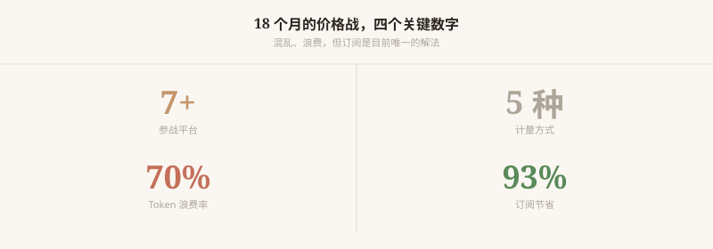
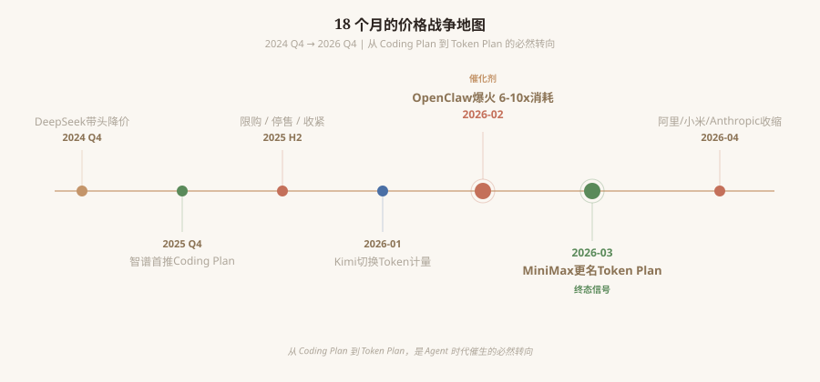
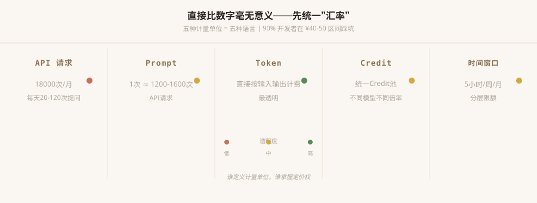
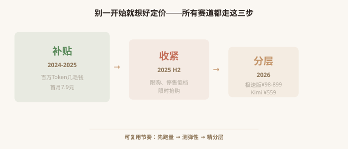
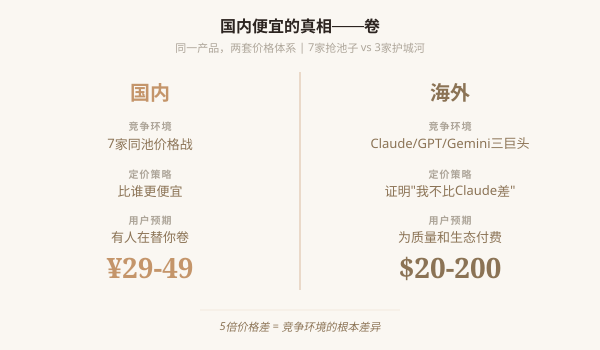

Agent 自动循环调用模型——读取文件、工具输出、上下文重发。 70% 的 Token 消耗不是你的需求，是 Agent 自身的开销。 订阅省了 93%，但代价是浪费在看不见的地方。

7+ 平台参战，5 种计量方式同时流通。 浪费率 70%——大部分消耗不是你的需求。 但订阅省了 93%——这是唯一能让普通人用得起的方式。
OpenClaw 自动完成编码循环——它不像人那样思考后调用，而是反复试错、读取、重发。 同一个任务，人类可能调 1 次，Agent 调 10 次。
华为昇腾 950PR 量产 → 国产芯片市占率从 30% 冲向 50%+。 芯片越多 → 算力越便宜 → Token 定价天花板越低。

DeepSeek 带头降价 → 智谱首推 Coding Plan → OpenClaw 爆火（催化剂）→ MiniMax 更名 Token Plan（终态信号）。 每一个节点都在为下一个铺路。

API 请求、Prompt、Token、Credit、时间窗口——五种"货币"同时流通。 90% 的开发者在 ¥40-50 区间踩坑，因为"18000 次 API ≠ 18000 次提问"。
阿里百炼 ¥40 ≈ 每天 20-120 次，MiniMax ¥29 ≈ 190 次。 信息越不透明的平台，等效用量越低。范围越宽，越不透明。

补贴 → 抢规模，百万 Token 几毛钱。
收紧 → 测弹性，限购停售限时抢购。
分层 → 利润最大化，极速版 ¥98-899。

国内 7 家同池价格战 → 比谁更便宜 → ¥29-49。
海外 三巨头 → 为质量生态付费 → $20-200。
5 倍的价格差，本质是 7 家抢池子 vs 3 家护城河。
不是 AI 定价的知识，是任何新产品定价都可以复用的逻辑。
不是报告，是卷宗。调查结束。